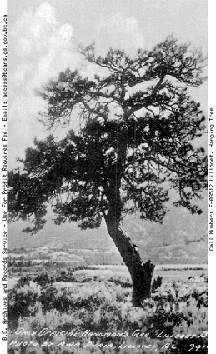

<TITLE>Hanging Tree</TITLE>
<center><h1>Hanging Tree / Lillooet, British Columbia</h1></center>

<pre>

Date: Sat, 05 Oct 1996 15:17:40 -0400
Subject: GIF of Hanging Tree, Lillooet BC

Attached please find a GIF of the Hanging Tree in Lillooet, British
Columbia, sourced from the British Columbia Archives
<http://www.bcars.gs.gov.bc.ca/bcars.htm> and copyrighted by them
(although I suspect it properly has its origin in the Phair Collection,
which is housed in the Lillooet Museum).  I have another more recent
picture of the Hanging Tree and once I scan it I will forward it to your
site to accompany this one.  It has long since died, been torched, and
had a chainsaw taken to it to "prune" it (why anybody would prune a dead
tree . . . ), so its modern appearance is quite different.  According to
folk history, at least 12 men (mostly natives) were hung from the tree
during the mid to late 19th Century, and some of the bodies were thrown
folk history, at least 12 men (mostly natives) were hung from the tree
during the mid to late 19th Century, and some of the bodies were thrown
in nearby rock pits that are the tailings of Chinese-operated placer
gold mining operations.

Mike Cleven
Computer Systems Manager
Way of Life School
Shalalth BC


</pre>
<center><h1>Giants of Burrard Inlet & English Bay/False Creek, Vancouver BC</H1></center>
<pre>

FYI, another interesting item concerns the trees of Burrard Inlet and
English Bay/False Creek in Vancouver.  There are no extant pictures of the
thousands of giants that were felled there, but when logging began in the
1860s the site of modern-day Vancouver was home to the largest trees that
have ever existed, averaging well above 16 feet in diameter and most
cresting well above 300 feet; the highest in BC today was recently found in
the city's Coquitlam watershed, and is a spruce some 320 feet high.  Some of
the trees cut in what is today the city's Jericho neighbourhood were in the
vicinity of 400 feet.

It has been stated that the construction of the windjammer fleets of the
American merchant marine and the British Navy in the latter days of the Age
of Sail would have been impossible without the mast-spars that were cut in
Burrard Inlet and English Bay.  I cannot remember the exact dimensions, but
something like several dozen 140 foot beams of clear spruce (or fir?),
measuring 8 feet by 12 feet and clear-grained for their entire length, were
sold to the Emperor of China by the Jeremiah Rogers logging company from the
Jericho ("Jerry's Cove") area in the 1870s, and today comprise the rafters
of one of the great halls in the Forbidden City.  This can be verified by
consulting the city's historical archive.

The only pictures I can think of that concern this grove of vanished giants
are of the "Princess Louise Tree", which stood near the old Hastings Sawmill
at the eastern end of Gastown (the old part of Vancouver) and which is
visible in many "skyline" photos taken from the harbour.  There are also
some of oxen teams dragging the felled giants across skid roads through the
coniferous swamps that the city has been superimposed upon over the course
of the last century.  One famous picture, showing people standing about a
fir that was supposed to have stood and been fallen at the modern corner of
Georgia and Granville Streets (the equivalent of 34th and Broadway in
Manhattan) is now believed to be a trick-photography hoax.  There are many
other archival pictures, however, of loggers and others standing amid the
vanished groves of giant evergreens.  The tiny areas of forest that have
been just barely protected - Cathedral Grove on the Tofino Highway, Carmanah
Valley, and so on - are bare shadows of the immensity of British Columbia's
former arborea, and it is conceded by forestry historians that the site of
present-day Vancouver was unchallenged in size and majesty throughout the
length of the coast and islands of the Pacific Northwest.  This is, no
doubt, why it was the first area of the province to be thoroughly clear-cut.
I am nowhere near the city archives or library at present, and their images
are not yet on-line, although you may enquire directly to them concerning
reproduction; the provincial archive's web address should cross-reference
you to the other archives and libraries hereabouts.

Mike Cleven




</pre>
<p>


<A HREF="index-2.html"></A>Return to Main Page<br>
<center><A HREF="mailto:jj68@nyu.edu">June Julian jj68@nyu.edu</center></A>

